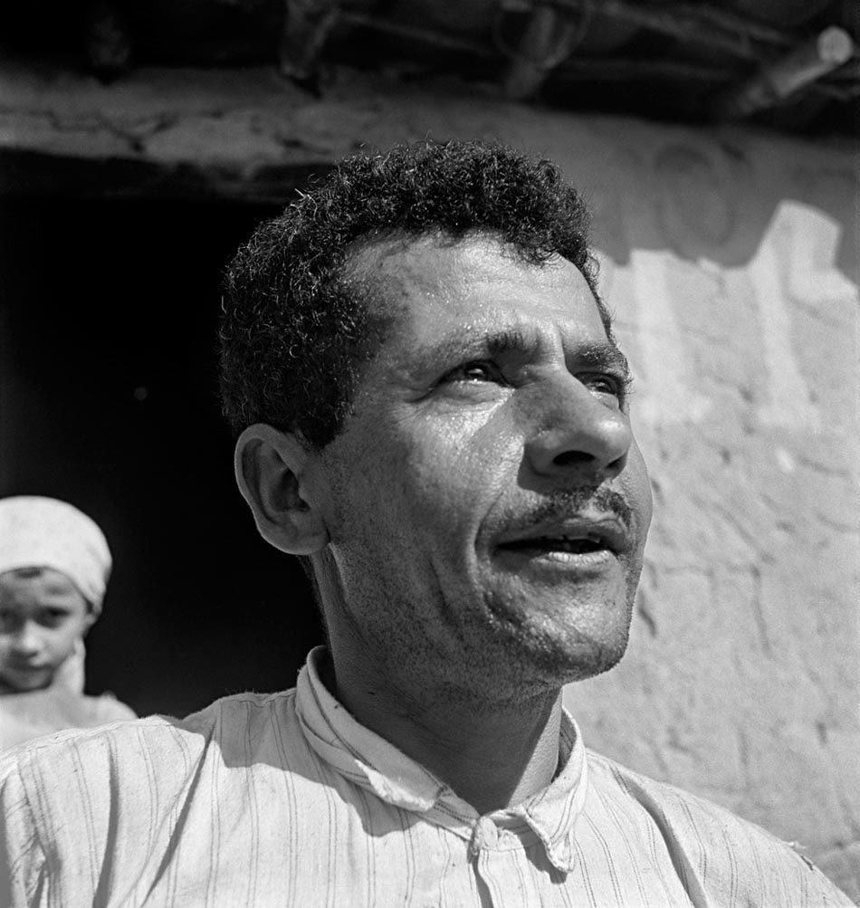

Mestre Vitalino
Quem foi Mestre Vitalino (1909–1963)?
- Ceramista e músico pernambucano nascido em Caruaru.
- Começou modelando pequenos animais com sobras de barro da mãe e, depois, passou a criar grupos humanos retratando o cotidiano do Nordeste (como a obra Trabalhadores no eito).
- Tornou a cidade de Caruaru um grande polo de comércio ceramista.
- Em 1947, realizou uma exposição no Rio de Janeiro que marcou a introdução da arte popular para o grande público.
- Curiosidade: Sua importância é tão grande que virou até tema de biografia em quadrinhos (Vitalino, o menino que virou mestre)

1909–1963